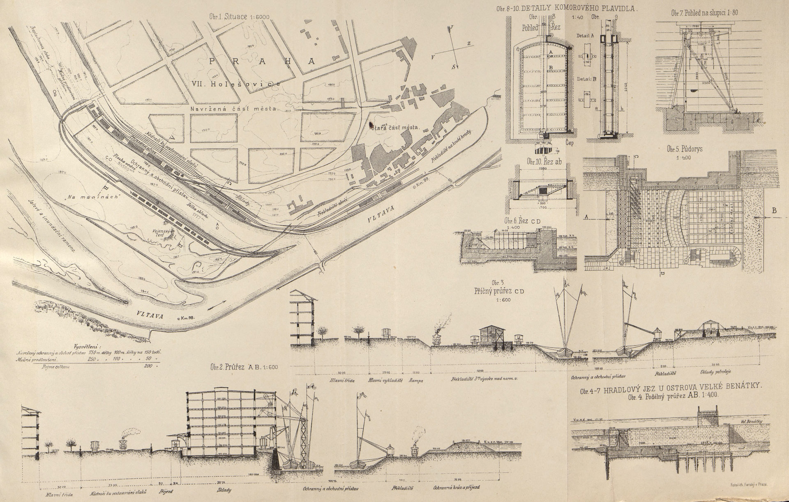
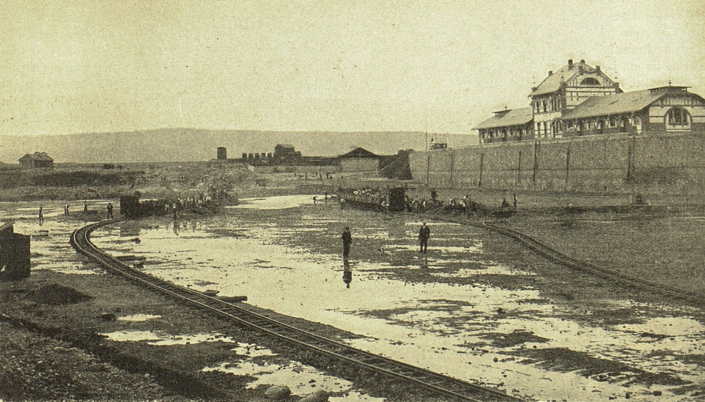
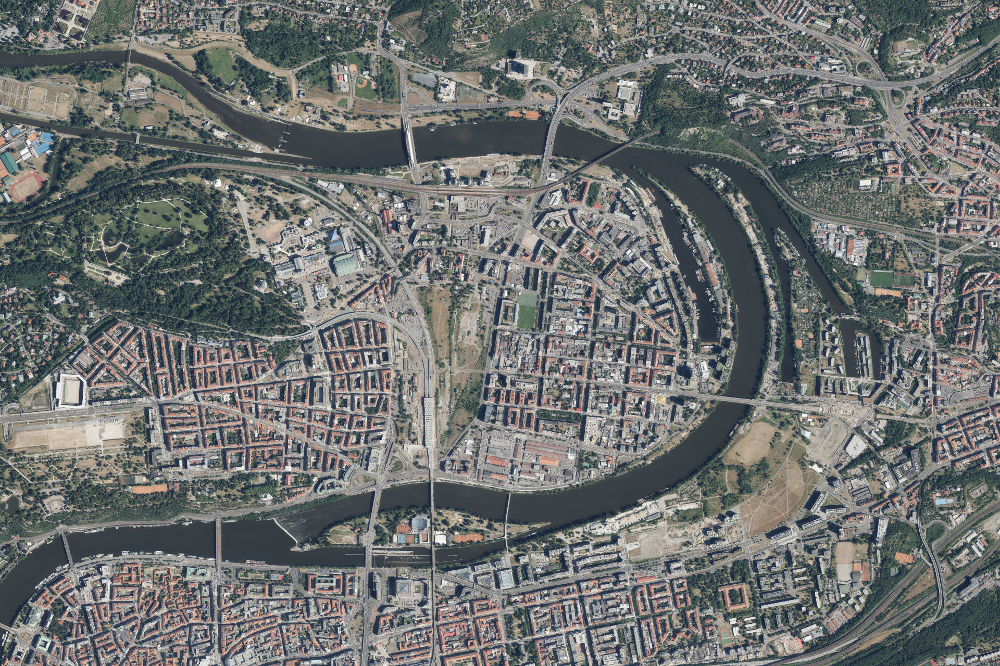
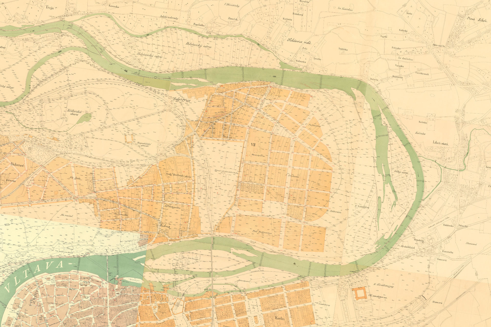
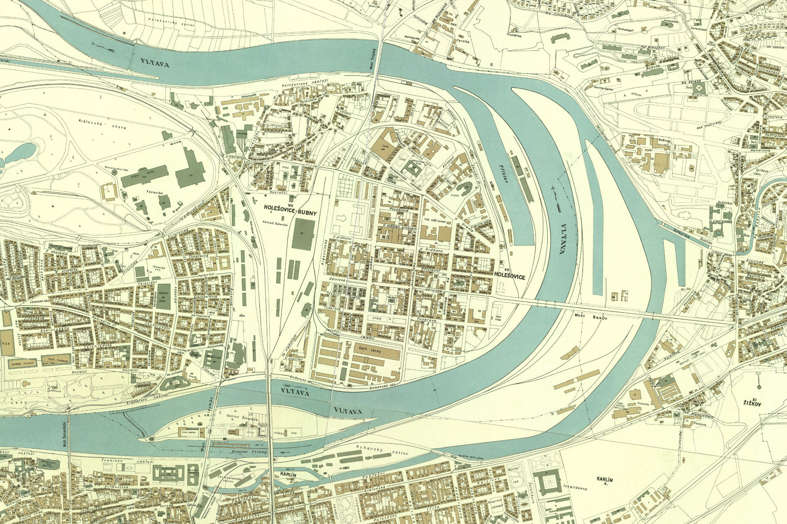

Největší pražský přístav a jediné místo ve městě, kde se v jednom bodě potkávaly lodě, vlaky a nákladní vozy. Klíčem k úspěchu přístavu byla jeho poloha. V Holešovicích končily hned tři železniční dráhy (Rakousko-uherská státní, Buštěhradská a Severozápadní) a přístav se tak stal ideálním místem k distribuci zboží. Odsud vedly vlečky nejen na nádraží Bubny, ale i do okolních podniků — papírny Pergamentka, železáren, mlýnů i elektrárny. Většina z nich zanikla až po roce 1989. Celý přístav je od roku 2002 chráněnou kulturní památkou. Dnes na jeho březích stojí rezidence Prague Marina.
Fakta6 položek
Vybudováno
1892–1910
Délka bazénu
750 m
Vytěženo
513 900 m³
Architekt budov
F. Sander, 1906
Exteriér
volně přístupné
Interiér
–
Stavby přístavu
Zajímavosti
Věděli jste, že Holešovický přístav nevznikl na řece?
Přístav nevznikl na řece, ale vedle ní. Dělníci firmy Vojtěcha Lanny vyhloubili přístavní bazén z holešovické planiny ve dvou etapách. V letech 1892–1895 vznikl ochranný zimní přístav — 750m dlouhý, 100m široký, 2–4m hluboký — ve kterém lodě mohly bezpečně přečkat povodně a zimní zámrazy. Teprve po dokončení regulačních prací na splavnění Vltavy směrem pod Prahu a s prudkým rozvojem pražského průmyslu vyvstala naléhavá potřeba velkého překladiště. Dosavadní karlínský přístav kapacitně nestačil. Holešovický přístav byl proto v této druhé fázi přeprojektován a upraven na přístav obchodní. Kolem let 1906–1908 byly dobudovány masivní kamenné nábřežní zdi a secesní budovy areálu. Přístav pojal 150 až 170 velkých labských lodí a jako jediný v Praze měl lodní výtah — zařízení, které dokázalo vyzdvihnout celou loď z vody na souš k opravě nebo zimní prohlídce. Celá stavba stála 1 230 000 zlatých (~2,7–2,8 mld. Kč / ~110 mil. EUR). Na tehdejší dobu se jednalo o obrovskou sumu, kterou složilo město Praha spolu s rakouským místodržitelstvím.

Plán přístavu, 1894
Načítám…
Plán holešovického přístavu, 1894

Rozšíření přístavu ~1906–1908
Načítám…
Rozšíření přístavu ~1906–1908
Přeložení koryta Vltavy dramaticky změnilo tvar holešovického poloostrova. V letech 1926–1928 inženýři přeložili koryto Vltavy blíže k přístavu a vytvořili tak úzkou kosu na které postavil architekt František Bartoš funkcionalistická Veřejná skladiště se železobetonovým skeletem, později doplněná i o chladírnu a mrazírnu potravin. Nejlépe patrné je to při porovnání orientačního plánu Prahy z let 1909–1914 se současným leteckým snímkem.


1909–1914
Načítám…
Dnes (ortofoto)
Načítám…
1909–1914Dnes
Teprve koleje udělaly z přístavu skutečný dopravní uzel. Holešovická přístavní dráha, jak se tato unikátní železniční vlečka oficiálně jmenovala, byla uvedena do provozu 6. června 1910 s cílem propojit rozvíjející se holešovický říční přístav a okolní továrny s nákladovým nádražím Praha-Bubny. Její trasa dlouhá 2,6 kilometru byla stavební raritou. Koleje vedly přímo středem městské uliční zástavby – zejména Jankovcovou ulicí – a vlaky zde hned na několika místech úrovňově křížily frekventované tramvajové tratě. Hlavní éra vlečky skončila s útlumem nákladní dopravy na sklonku 20. století a k jejímu oficiálnímu zrušení došlo v roce 1998.

Orientační plán, 1938
Načítám…
Orientační plán Prahy, 1938
Zlatá éra přístavu přišla mezi válkami. Přístav zásoboval surovinami okolní holešovické továrny a podniky. Vozily se tudíž kovy, hutní výrobky, dřevo, chemikálie nebo suroviny pro potravinářský průmysl. Přes přístav se ve velkém rovněž přepravoval písek, štěrk, stavební kámen a další materiály určené pro rozvíjející se pražskou výstavbu. Zavedením motorových nákladních lodí od roku 1931 se zrychlil transport cennějšího, kusového a rychlozkazitelného zboží mezi Prahou a severním Německem. Z Holešovic vyrážely motorové nákladní lodě po Vltavě a Labi přes Drážďany až do Hamburku k moři a odtud do celého světa. Díky tomuto přímému spojení proudilo do Prahy také koloniální a spotřební zboží ze zámoří. Jednalo se například o kávu, čaj, koření, jižní ovoce nebo různé stroje a polotovary. Po druhé světové válce bylo hlavní komoditou uhlí. Holešovický přístav se stal hlavní bránou, kterou proudilo topivo do průmyslové Prahy.


{kind=link}
{kind=link}